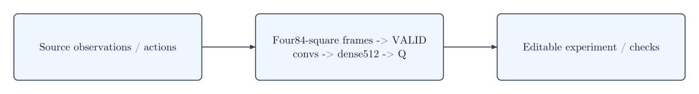
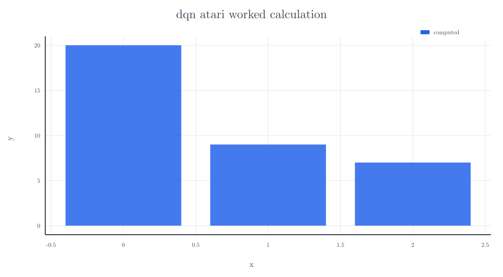
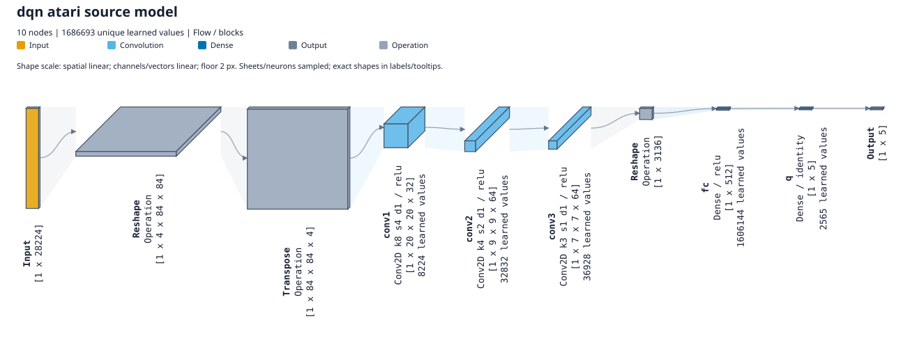
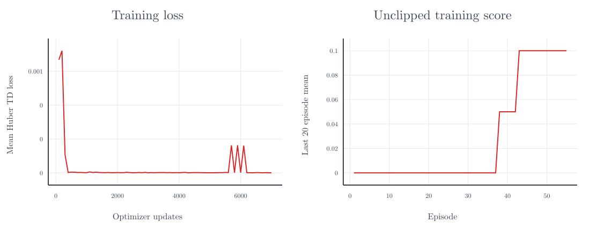

Nature DQN: Native Pixel Graph and Original Synthetic Update Protocol
Abstract
Double DQN learns action values from stacked Atari screens. The online network selects the successor action and the delayed target network evaluates it. Training uses clipped rewards, and evaluation reports the original game score.
The optional ALE run uses the bundled Tetris ROM and the full
30,000-step schedule. The replay ring retains four byte-normalized
frames per observation and shares overlapping frames. With an ALE
SDK, zlib and ffmpeg available, use the same compiler flags and ROM
setup as the Atari preprocessing report,
then run this report. Set DM_DQN_ATARI_STEPS to shorten an SDK run
while keeping the 2,000-step warmup and the 32-sample batches.
Follow the actual data path
Four84-square frames -> VALID convs -> dense512 -> Q.
#include <dm/dm.hpp>
int main(){std::filesystem::create_directories("build");dm::graphics::Diagram d(29,1200);dm::graphics::DiagramNodeStyle s;s.width=14;s.height=5;s.font_size=23;d.node("input",{-18,0},"Source observations / actions",s).node("component",{0,0},"Four84-square frames -> VALID convs -> dense512 -> Q",s).node("report",{18,0},"Editable experiment / checks",s).edge("input","component").edge("component","report").save_svg("build/dqn_atari_method.svg");}
A hand-checkable calculation
The three VALID convolution outputs have spatial sides20,9,7: floor((84-8)/4)+1=20, floor((20-4)/2)+1=9 and9-3+1=7. The source ALE-free path fits300 updates to its original synthetic terminal targets, which is not Atari performance.
#include <dm/dm.hpp>
int main(){std::filesystem::create_directories("build");std::vector<double>values{20,9,7};if(dm::nn::models::NaturePixelQParameterCount(5)!=8224+32832+36928+(3136*512+512)+(512*5+5))return 1;std::print("| coordinate | computed value |\n|---:|---:|\n");for(size_t i=0;i<values.size();++i)std::print("| {} | {:.9f} |\n",i,values[i]);std::vector<double>x(values.size());std::iota(x.begin(),x.end(),0.);double low=std::min(0.,*std::min_element(values.begin(),values.end())),high=std::max(0.,*std::max_element(values.begin(),values.end())),span=std::max(1.,high-low);dm::graphics::RPlot::create().bars(x,values,"computed",{37,99,235}).ylim(low-.05*span,high+.05*span).title("dqn atari worked calculation").size(1000,550).save_svg("build/dqn_atari_worked.svg");}| coordinate | computed value |
|---|---|
| 0 | 20.000000000 |
| 1 | 9.000000000 |
| 2 | 7.000000000 |

Inspect the native source model
This independent trace uses source default input and hidden sizes. SAC shows one critic with the mean action; the full source retains sampled actions and both critics. The graph trace has its own parameter store and does not alter training.
#include <dm/dm.hpp>
int main(){namespace n=dm::nn;namespace m=n::models;std::filesystem::create_directories("build");n::ParameterStore p(0);n::Module network([&](const n::Tensor&x){return m::NaturePixelQ(p,x,5);},"dqn atari source model");n::ModelPlotOptions options;options.detail=n::ModelPlotDetail::Blocks;options.sizing.minimum_extent=2;options.sizing.max_planes=2;network.plot(n::zeros({1,28224}),options).save_svg("build/dqn_atari_network.svg");}
Complete preserved source protocol
The executable uses the Nature CNN, replay sampling, periodic hard target copies and a Huber temporal-difference loss. When the SDK is unavailable, the same learner runs an isolated synthetic check.
#include <dm/dm.hpp>
namespace report_capture {
inline dm::nn::NamedTensors arrays;inline std::map<std::string,std::vector<double>> traces;
inline void Trace(const std::string&name,double value){traces[name].push_back(value);}inline int monitor_index=0,checkpoint_index=0;
template<class T>void Save(const std::string& name,const std::vector<T>&v){arrays.push_back({name,dm::nn::from_vector(v)});}
struct Checkpoint{dm::nn::ParameterStore& store;~Checkpoint(){auto tag=std::to_string(checkpoint_index++);for(const auto& name:store.names())arrays.push_back({"parameters_"+tag+"_"+name,store.at(name).detach().clone()});}};
struct Flush{~Flush(){for(const auto&[name,values]:traces)Save(name,values);if(!arrays.empty()){std::filesystem::create_directories("build");dm::nn::save_npz("build/dqn_atari_source.npz",arrays);}}};inline Flush flush;
}
// CMD: just run-nn dqn_atari
// DQN on Atari through ALE.
//
// Both branches use the same Nature model and Double DQN update.
// Editable workflow support: checks.hpp
// Small runtime checks used by the executable nn examples. They stay on in
// Release builds and make the example exit nonzero on failure, so `just
// run-all-nn` doubles as a regression test against the recorded TF numbers.
// Editable workflow support: runtime.hpp
// Bounded demonstrations by default; opt into convergence experiments explicitly.
namespace example_runtime {
inline bool Full() {
const char* value = std::getenv("DATAMUNGE_EXAMPLES_FULL");
return value && std::string(value) == "1";
}
template <typename T> T Limit(T requested, T quick_limit) {
return Full() ? requested : std::min(requested, quick_limit);
}
inline void Describe() {
if (!Full())
std::cout << "Quick demonstration: bounded training; convergence metrics require "
"DATAMUNGE_EXAMPLES_FULL=1.\n";
}
} // namespace example_runtime
namespace check {
inline void Require(bool condition, const std::string& message) {
if (!condition) throw std::runtime_error(message);
}
// A short demonstration checks execution, derivatives and persistence; reaching
// a published accuracy/return requires the separately requested full schedule.
inline void TrainingQuality(bool condition, const std::string& message) {
if (example_runtime::Full()) Require(condition, message);
else std::cout << " full-training quality check deferred: " << message << '\n';
}
inline void Near(double actual, double expected, double tolerance, const std::string& message) {
if (!std::isfinite(actual) || !std::isfinite(expected) || std::abs(actual - expected) > tolerance)
throw std::runtime_error(message + ": got " + std::to_string(actual) + ", expected " + std::to_string(expected));
}
/// Expects `f` to throw; returns the message.
template <typename F>
std::string Throws(F&& f, const std::string& message) {
try {
f();
} catch (const std::exception& e) {
return e.what();
}
throw std::runtime_error(message + ": expected an exception");
}
} // namespace check
inline void Header(const std::string& title) {
const std::size_t pad = title.size() < 60 ? 60 - title.size() : 0;
std::cout << "\n== " << title << " " << std::string(pad, '=') << "\n";
}
// Editable workflow support: rl/ale_env.hpp
// datamunge::nn port of tflow_examples src/common/rl/ale_env.h.
//
// ALE is not a datamunge dependency (the plan keeps emulators in the examples
// repo), so this header splits tflow's AtariEnv in two:
// - AtariFrameStack: the DQN preprocessing (max-pool of the last two frames,
// box-filter resize to 84x84, a stack of the last 4 frames, scaling to
// [0, 1]), plain C++ with no emulator; same code as tflow's private helpers.
// - AtariEnv: the ALE-backed environment, identical to tflow's, compiled only
// when <ale/ale_interface.hpp> is on the include path (then link libale).
// DATAMUNGE_EXAMPLES_HAVE_ALE says which.
// FindRom also looks in ~/projects/tflow_examples/data/roms.
//
// Original comment:
// Atari 2600 games through the Arcade Learning Environment, with the
// standard DQN preprocessing (Mnih et al. 2015): frame skip with max-pooling
// over the last two frames, grayscale, resize to 84x84, a stack of the last
// 4 frames, random no-ops at reset, and optional reward clipping. The ROM
// is looked up in data/roms/ and then $ALE_ROM_DIR (the flake points that
// at the free Tetris ROM shipped with ALE).
#if defined(DATAMUNGE_EXAMPLES_ENABLE_ALE)
#define DATAMUNGE_EXAMPLES_HAVE_ALE 1
#include <ale/ale_interface.hpp>
#include <ale/common/Log.hpp>
#else
#define DATAMUNGE_EXAMPLES_HAVE_ALE 0
#endif
// Editable workflow support: rl/env.hpp
namespace rl {
using datamunge::rl::environments::Obs;
using datamunge::rl::environments::Action;
using datamunge::rl::environments::ActionSpace;
using datamunge::rl::environments::StepResult;
using datamunge::rl::environments::Env;
using datamunge::rl::environments::EnvBase;
using datamunge::rl::environments::Transition;
using datamunge::rl::environments::TabularEnv;
}
namespace rl {
// Directories searched for <game>.bin, in order.
inline std::vector<std::string> RomDirs() {
std::vector<std::string> dirs = {"data/roms"};
if (const char* d = std::getenv("TFLOW_DATA_DIR")) dirs.push_back(std::string(d) + "/roms");
if (const char* d = std::getenv("ALE_ROM_DIR")) dirs.push_back(d);
if (const char* h = std::getenv("HOME")) dirs.push_back(std::string(h) + "/projects/tflow_examples/data/roms");
return dirs;
}
inline std::string FindRom(const std::string& game) {
for (const std::string& dir : RomDirs()) {
const std::string p = dir + "/" + game + ".bin";
if (std::filesystem::exists(p)) return p;
}
throw std::runtime_error("ROM " + game + ".bin not found in data/roms/ or $ALE_ROM_DIR");
}
struct AtariOptions {
int frame_skip = 4;
bool clip_rewards = false;
int noop_max = 30;
int max_frames = 27000; // 108k emulator frames at frame skip 4: Gymnasium's limit
float repeat_action_probability = 0.25f; // sticky actions
};
// The DQN frame pipeline over raw grayscale screens of raw_w x raw_h.
using dm::rl::environments::AtariFrameStack;
#if DATAMUNGE_EXAMPLES_HAVE_ALE
class AtariEnv : public Env {
public:
static constexpr int kSize = AtariFrameStack::kSize, kStack = AtariFrameStack::kStack;
using Options = AtariOptions;
AtariEnv(const std::string& game, Options opt = AtariOptions()) : game_(game), opt_(opt) {
ale::Logger::setMode(ale::Logger::Error); // no ROM banner / "Sending Reset..." chatter
ale_.setInt("random_seed", 0);
ale_.setFloat("repeat_action_probability", opt.repeat_action_probability);
ale_.setInt("frame_skip", 1); // skipping is done here so frames can be max-pooled
ale_.loadROM(FindRom(game));
actions_ = ale_.getMinimalActionSet();
raw_w_ = static_cast<int>(ale_.getScreen().width());
raw_h_ = static_cast<int>(ale_.getScreen().height());
frames_ = AtariFrameStack(raw_w_, raw_h_);
}
std::string name() const override { return "Atari(" + game_ + ")"; }
int obs_size() const override { return kStack * kSize * kSize; }
ActionSpace action_space() const override { return ActionSpace::Discrete(static_cast<int>(actions_.size())); }
void Seed(uint64_t seed) override {
rng_.seed(seed);
ale_.setInt("random_seed", static_cast<int>(seed));
ale_.loadROM(FindRom(game_));
}
int max_steps() const override { return opt_.max_frames; }
int lives() { return ale_.lives(); }
std::vector<std::string> action_names() const override {
static const char* names[] = {"NOOP", "FIRE", "UP", "RIGHT", "LEFT", "DOWN", "UPRIGHT", "UPLEFT", "DOWNRIGHT", "DOWNLEFT",
"UPFIRE", "RIGHTFIRE", "LEFTFIRE", "DOWNFIRE", "UPRIGHTFIRE", "UPLEFTFIRE", "DOWNRIGHTFIRE", "DOWNLEFTFIRE"};
std::vector<std::string> out;
for (auto a : actions_) out.push_back(names[static_cast<int>(a)]);
return out;
}
// The current raw RGB screen (raw_w x raw_h), for videos.
const std::vector<unsigned char>& rgb() {
ale_.getScreenRGB(rgb_);
return rgb_;
}
int raw_width() const { return raw_w_; }
int raw_height() const { return raw_h_; }
// The most recent preprocessed 84x84 frame (0..255), for inspection.
const std::vector<unsigned char>& last_frame() const { return frames_.last_frame(); }
StepResult step(const Action& action) override {
StepResult r;
float reward = 0;
std::vector<unsigned char> prev, cur;
for (int k = 0; k < opt_.frame_skip; ++k) {
reward += static_cast<float>(ale_.act(actions_[action.discrete]));
if (k == opt_.frame_skip - 2) ale_.getScreenGrayscale(prev);
if (ale_.game_over()) break;
}
ale_.getScreenGrayscale(cur);
AtariFrameStack::MaxPool(cur, prev);
frames_.PushFrame(cur);
r.obs = frames_.StackedObs();
r.reward = opt_.clip_rewards ? (reward > 0 ? 1.f : (reward < 0 ? -1.f : 0.f)) : reward;
raw_reward_ = reward;
r.terminated = ale_.game_over();
r.truncated = !r.terminated && ++steps_ >= opt_.max_frames;
return r;
}
float last_raw_reward() const { return raw_reward_; }
protected:
Obs Reset() override {
ale_.reset_game();
steps_ = 0;
frames_.Clear();
const int noops = opt_.noop_max > 0 ? static_cast<int>(rng_() % (opt_.noop_max + 1)) : 0;
for (int i = 0; i < noops; ++i) ale_.act(actions_[0]);
std::vector<unsigned char> g;
ale_.getScreenGrayscale(g);
for (int i = 0; i < kStack; ++i) frames_.PushFrame(g);
return frames_.StackedObs();
}
private:
std::string game_;
Options opt_;
ale::ALEInterface ale_;
ale::ActionVect actions_;
AtariFrameStack frames_;
std::vector<unsigned char> rgb_;
std::mt19937_64 rng_{0};
int raw_w_ = 0, raw_h_ = 0, steps_ = 0;
float raw_reward_ = 0;
};
#endif // DATAMUNGE_EXAMPLES_HAVE_ALE
} // namespace rl
// Editable workflow support: rl/dqn_common.hpp
// datamunge::nn port of tflow_examples src/common/rl/dqn_common.h.
// Pieces shared by the DQN-family examples: hyper-parameters, the epsilon
// schedule, a training monitor, Q-value heads (plain / dueling), greedy
// evaluation, the C51 distribution projection, and Adam with global-norm
// clipping (tflow's nn::Adam).
//
// Changes from the TF version: the TF hardware options (device=, threads=,
// xla=) are accepted and ignored, since nn runs eagerly on the CPU; QHead
// builds on a ParameterStore and returns a tensor instead of adding graph
// nodes; the noisy-network head (nn::NoisyDense) is not included, because
// datamunge::nn has no noisy layer yet.
// Editable workflow support: rl/utils.hpp
// datamunge::nn port: copied from tflow_examples src/common/rl/utils.h (TF-free code, unchanged).
// Small helpers shared by the RL examples: episode statistics, random and
// greedy rollouts, and printing.
namespace rl {
struct EpisodeStats {
std::vector<float> returns;
std::vector<int> lengths;
float mean_return() const {
return returns.empty() ? 0.f
: std::accumulate(returns.begin(), returns.end(), 0.f) / returns.size();
}
float mean_length() const {
return lengths.empty() ? 0.f
: std::accumulate(lengths.begin(), lengths.end(), 0.f) / lengths.size();
}
float min_return() const { return *std::min_element(returns.begin(), returns.end()); }
float max_return() const { return *std::max_element(returns.begin(), returns.end()); }
};
// Run `episodes` episodes of `env` choosing actions with `policy(obs)`.
// Uniformly random actions.
inline void PrintStats(const std::string& label, const EpisodeStats& s) {
std::printf(" %-32s return mean %8.2f min %8.2f max %8.2f length mean %6.1f\n",
label.c_str(), s.mean_return(), s.min_return(), s.max_return(), s.mean_length());
}
using dm::rl::foundations::ArgMax;using dm::rl::foundations::ArgMaxRandomTie;
inline std::string FormatObs(const Obs& o, int max_elems = 8) {
std::string s = "[";
for (size_t i = 0; i < o.size() && static_cast<int>(i) < max_elems; ++i) {
char buf[32];
std::snprintf(buf, sizeof buf, "%s%.3f", i ? " " : "", o[i]);
s += buf;
}
if (static_cast<int>(o.size()) > max_elems) s += " ...";
return s + "]";
}
} // namespace rl
namespace rl {
namespace nn = datamunge::nn;
struct DqnConfig {
int steps = 50000; // environment steps
int warmup = 1000; // steps before training starts
int batch = 64;
int buffer = 50000;
float gamma = 0.98f; // 0.99 is the usual choice; 0.98 bounds Q by 50 and makes CartPole far more stable
float lr = 5e-4f;
float clip_norm = 10.f;
int target_sync = 500; // hard target update period (steps), used when tau == 1
float tau = 0.005f; // target <- tau * online + (1 - tau) * target every step; tau = 1 means a hard copy every target_sync steps
float eps_start = 1.f, eps_end = 0.05f;
int eps_decay_steps = 10000;
int hidden = 128;
int train_every = 2;
int log_every = 5000;
int eval_every = 5000;
int eval_episodes = 5;
uint64_t seed = 0;
};
// TF-only options that the ports accept and ignore.
inline bool IsHardwareOption(const std::string& key) {
return key == "device" || key == "threads" || key == "intra_threads" || key == "inter_threads" || key == "xla";
}
// Overrides from the command line, e.g. `just run-nn dqn steps=50000 lr=5e-4`.
inline void ParseConfig(int argc, char** argv, DqnConfig* c) {
for (int i = 1; i < argc; ++i) {
const std::string arg = argv[i];
const size_t eq = arg.find('=');
if (eq == std::string::npos) continue;
const std::string key = arg.substr(0, eq);
const float v = std::strtof(arg.c_str() + eq + 1, nullptr);
if (IsHardwareOption(key)) continue;
if (key == "steps") c->steps = static_cast<int>(v);
else if (key == "warmup") c->warmup = static_cast<int>(v);
else if (key == "batch") c->batch = static_cast<int>(v);
else if (key == "buffer") c->buffer = static_cast<int>(v);
else if (key == "gamma") c->gamma = v;
else if (key == "lr") c->lr = v;
else if (key == "clip_norm") c->clip_norm = v;
else if (key == "target_sync") c->target_sync = static_cast<int>(v);
else if (key == "tau") c->tau = v;
else if (key == "eps_start") c->eps_start = v;
else if (key == "eps_end") c->eps_end = v;
else if (key == "eps_decay_steps") c->eps_decay_steps = static_cast<int>(v);
else if (key == "hidden") c->hidden = static_cast<int>(v);
else if (key == "train_every") c->train_every = static_cast<int>(v);
else if (key == "log_every") c->log_every = static_cast<int>(v);
else if (key == "eval_every") c->eval_every = static_cast<int>(v);
else if (key == "seed") c->seed = static_cast<uint64_t>(v);
else if (key != "task" && key != "game") std::fprintf(stderr, "unknown option %s\n", arg.c_str());
}
if (!DATAMUNGE_EXAMPLES_HAVE_ALE && !example_runtime::Full()) {
c->steps = std::min(c->steps, 512);
c->warmup = std::min(c->warmup, 32);
c->batch = std::min(c->batch, 8);
c->log_every = c->eval_every = std::max(1, c->steps);
c->eval_episodes = 1;
c->eps_decay_steps = std::min(c->eps_decay_steps, c->steps);
example_runtime::Describe();
}
}
inline float Epsilon(const DqnConfig& c, int step) {
const float frac = std::min(1.f, static_cast<float>(step) / c.eps_decay_steps);
return c.eps_start + frac * (c.eps_end - c.eps_start);
}
// Greedy evaluation with any action function.
inline float Evaluate(Env& env, const std::function<int(const Obs&)>& act, int episodes, uint64_t seed) {
double total = 0;
for (int e = 0; e < episodes; ++e) {
Obs obs = env.reset(seed + e);
while (true) {
StepResult r = env.step(act(obs));
total += r.reward;
obs = r.obs;
if (r.done()) break;
}
}
report_capture::Trace("eval_call",static_cast<float>(total/episodes));
return static_cast<float>(total / episodes);
}
// Tracks episode returns and losses and prints one line per log period.
class Monitor {
public:
explicit Monitor(const DqnConfig& cfg, const char* third_column = "eps") : cfg_(cfg) {
std::printf(" %8s %8s %12s %7s %10s %10s\n", "step", "episodes", "return(20)", third_column, "loss", "eval");
}
void EndEpisode(float ret) { returns_.push_back(ret); }
~Monitor(){auto tag=std::to_string(id_);report_capture::Save("return_"+tag,returns_);report_capture::Save("step_"+tag,steps_);report_capture::Save("eval_"+tag,evaluation_);report_capture::Save("loss_"+tag,mean_losses_);}
void AddLoss(float loss) { losses_.push_back(loss); }
int episodes() const { return static_cast<int>(returns_.size()); }
float RecentReturn(int n = 20) const {
if (returns_.empty()) return 0.f;
const size_t from = returns_.size() > static_cast<size_t>(n) ? returns_.size() - n : 0;
return std::accumulate(returns_.begin() + from, returns_.end(), 0.f) / (returns_.size() - from);
}
void Log(int step, float eps, float eval_return) {
const float loss = losses_.empty() ? 0.f : std::accumulate(losses_.begin(), losses_.end(), 0.f) / losses_.size();
steps_.push_back(step);evaluation_.push_back(eval_return);mean_losses_.push_back(loss);
losses_.clear();
char eval[16];
if (std::isnan(eval_return)) std::snprintf(eval, sizeof eval, "%10s", "");
else std::snprintf(eval, sizeof eval, "%10.1f", eval_return);
std::printf(" %8d %8d %12.1f %7.3f %10.4f %s\n", step, episodes(), RecentReturn(), eps, loss, eval);
std::fflush(stdout);
}
private:
int id_=report_capture::monitor_index++;std::vector<double>steps_,evaluation_,mean_losses_;
DqnConfig cfg_;
std::vector<float> returns_, losses_;
};
using dm::nn::models::ProjectDistribution;
// One observation as a [1, obs_dim] tensor.
inline nn::Tensor Row(const Obs& o) { return nn::from_vector(o, {1, static_cast<std::int64_t>(o.size())}); }
} // namespace rl
// Editable workflow support: rl/replay.hpp
namespace rl {using dm::rl::replay::Experience;using dm::rl::replay::Batch;using dm::rl::replay::ReplayBuffer;using dm::rl::replay::PrioritizedReplay;using dm::rl::replay::NStepBuffer;using dm::rl::replay::SeqBatch;using dm::rl::replay::SequenceReplay;}
namespace nn = datamunge::nn;
using nn::Tensor;
namespace {
constexpr int S = rl::AtariFrameStack::kSize, F = rl::AtariFrameStack::kStack;
// Nature DQN: [B, 4*84*84] -> NHWC [B, 84, 84, 4] -> conv 8x8/4 (32) -> 4x4/2 (64) -> 3x3/1 (64) -> fc 512 -> A
Tensor QNet(nn::ParameterStore& p, const Tensor& x, int A) {
return nn::models::NaturePixelQ(p,x,A);
}
std::int64_t ExpectedParams(int A) {
return nn::models::NaturePixelQParameterCount(A);
}
// The Double DQN update (y from the online argmax and the target's value).
struct DoubleDqn {
nn::ParameterStore online, target;
~DoubleDqn(){report_capture::Checkpoint a{online};report_capture::Checkpoint t{target};}
int A;
rl::DqnConfig cfg;
std::unique_ptr<nn::Optimizer> adam;
DoubleDqn(const rl::DqnConfig& c, int n_actions) : online(c.seed), target(c.seed + 1), A(n_actions), cfg(c) {
nn::NoGradGuard no_grad;
QNet(online, nn::zeros({1, F * S * S}), A);
QNet(target, nn::zeros({1, F * S * S}), A);
adam = std::make_unique<nn::Optimizer>(online,cfg.lr,nn::OptimizerConfig{nn::OptimizerKind::Adam});
Sync();
}
void Sync() { target.copy_from(online, cfg.tau); }
float Train(const rl::Batch& b) {
Tensor y;
{
nn::NoGradGuard no_grad;
const Tensor a_star = nn::argmax(QNet(online, b.s2, A), 1);
const Tensor next_value = nn::sum(QNet(target, b.s2, A) * nn::one_hot(a_star, A), {1});
y = b.r + (cfg.gamma * (1.0 - b.done)) * next_value;
}
const Tensor q_a = nn::sum(QNet(online, b.s, A) * nn::one_hot(b.a, A), {1});
const Tensor loss = nn::mean(nn::huber(y - q_a), {0});
auto gradients=nn::grad(loss,adam->parameters());if(cfg.clip_norm>0)gradients=nn::clip_by_global_norm(gradients,cfg.clip_norm).first;adam->step(gradients);
return loss.item<float>();
}
std::vector<float> QValues(const rl::Obs& o) {
nn::NoGradGuard no_grad;
return QNet(online, rl::Row(o), A).to_vector<float>();
}
};
#if !DATAMUNGE_EXAMPLES_HAVE_ALE
// A 160x210 grayscale test screen: dark background, an 8x8 sprite at column x.
std::vector<unsigned char> TestScreen(int x) {
std::vector<unsigned char> s(160 * 210, 20);
for (int y = 100; y < 108; ++y)
for (int i = x; i < x + 8 && i < 160; ++i) s[y * 160 + i] = 230;
return s;
}
void SyntheticPipeline(rl::DqnConfig cfg) {
std::printf("== ALE is not built in: Atari training is skipped (see the header).\n"
" Checking the Nature network and the Double DQN update on synthetic frame stacks instead.\n");
const int A = 5, B = 16;
cfg.lr = 1e-4f;
DoubleDqn agent(cfg, A);
std::printf(" network: %lld parameters\n", static_cast<long long>(agent.online.count()));
check::Require(agent.online.count() == ExpectedParams(A), "Nature DQN parameter count");
// B transitions: a sprite moving right (s) then one step further (s2), action a = i % A,
// reward +1 when the action matches the sprite's position bucket, all terminal so y = r.
rl::ReplayBuffer buffer(B, F * S * S);
for (int i = 0; i < B; ++i) {
rl::AtariFrameStack stack(160, 210);
const int x0 = 8 * i;
for (int f = 0; f < F; ++f) stack.PushFrame(TestScreen(x0 + 2 * f));
const rl::Obs s = stack.StackedObs();
stack.PushFrame(TestScreen(x0 + 2 * F));
const int a = i % A;
buffer.Add({s, a, a == (i / 4) % A ? 1.f : 0.f, stack.StackedObs(), 1.f, {}});
}
std::mt19937_64 rng(cfg.seed);
float first = 0, last = 0;
for (int it = 0; it < 300; ++it) {
rl::Batch b = buffer.Sample(B, rng);
const float l = agent.Train(b);report_capture::Trace("synthetic_loss",l);
check::Require(std::isfinite(l), "finite TD loss");
if (it == 0) first = l;
last = l;
agent.Sync();
}
const std::vector<float> q = agent.QValues(buffer.Sample(1, rng).s.to_vector<float>());
std::printf(" Huber TD loss on the synthetic batch: %.4f -> %.4f after 300 updates; Q(s, .) has %zu entries\n", first,
last, q.size());
check::Require(static_cast<int>(q.size()) == A, "Q(s, .) has one value per action");
check::Require(last < 0.25f * first, "the update fits the synthetic targets");
}
#endif
} // namespace
int main(int argc, char** argv) {
try {
rl::DqnConfig cfg;
cfg.steps = 30000;
cfg.warmup = 2000;
cfg.batch = 32;
cfg.buffer = 30000;
cfg.train_every = 4;
cfg.lr = 2.5e-4f;
cfg.tau = 1.f;
cfg.target_sync = 1000;
cfg.eps_decay_steps = 20000;
cfg.eps_end = 0.05f;
cfg.log_every = 5000;
cfg.eval_every = 15000;
cfg.eval_episodes = 1;
std::string game = "tetris";
for (int i = 1; i < argc; ++i)
if (std::string(argv[i]).rfind("game=", 0) == 0) game = std::string(argv[i]).substr(5);
rl::ParseConfig(argc, argv, &cfg);
#if DATAMUNGE_EXAMPLES_HAVE_ALE
if (const auto* override=std::getenv("DM_DQN_ATARI_STEPS")) cfg.steps=std::stoi(override);
check::Require(cfg.steps>=cfg.warmup && cfg.batch>=1 && cfg.batch<=cfg.warmup &&
cfg.train_every>0 && cfg.target_sync>0 && cfg.buffer>=cfg.batch,
"invalid Atari training schedule");
rl::AtariEnv::Options opt;
opt.clip_rewards = true;
rl::AtariEnv env(game, opt), eval_env(game);
const int A = env.action_space().n;
std::printf("== Double DQN on %s: %d agent steps (%d frames), %d actions, train every %d steps, target sync %d\n",
env.name().c_str(), cfg.steps, 4 * cfg.steps, A, cfg.train_every, cfg.target_sync);
DoubleDqn agent(cfg, A);
std::printf(" network: %lld parameters\n", static_cast<long long>(agent.online.count()));
check::Require(agent.online.count() == ExpectedParams(A), "Nature DQN parameter count");
dm::rl::replay::AtariReplay buffer(cfg.buffer);
rl::Monitor monitor(cfg);
std::mt19937_64 rng(cfg.seed);
auto greedy = [&](const rl::Obs& o) { return rl::ArgMax(agent.QValues(o)); };
rl::Obs obs = env.reset(cfg.seed);
float ret = 0;
int updates=0;
for (int step = 1; step <= cfg.steps; ++step) {
const float eps = rl::Epsilon(cfg, step);
const int act = std::uniform_real_distribution<float>(0, 1)(rng) < eps ? static_cast<int>(rng() % A) : greedy(obs);
rl::StepResult sr = env.step(act);
buffer.Add({obs, act, sr.reward, sr.obs, sr.terminated ? 1.f : 0.f, {}});
ret += env.last_raw_reward();
obs = sr.obs;
if (sr.done()) monitor.EndEpisode(ret), ret = 0, obs = env.reset();
if (step >= cfg.warmup && step % cfg.train_every == 0) {
const float loss = agent.Train(buffer.Sample(cfg.batch, rng));
check::Require(std::isfinite(loss), "finite TD loss");
monitor.AddLoss(loss);
report_capture::Trace("ale_loss",loss);
++updates;
}
if (cfg.tau < 1.f ? step >= cfg.warmup : step % cfg.target_sync == 0) agent.Sync();
if (step % cfg.log_every == 0)
monitor.Log(step, eps, step % cfg.eval_every == 0 ? rl::Evaluate(eval_env, greedy, cfg.eval_episodes, 1000 + step) : NAN);
}
std::printf(" (returns are unclipped game scores; training uses clipped rewards)\n");
std::println(" {} training transitions and {} updates",cfg.steps,updates);
const auto stem="dqn_atari_"+std::filesystem::path(game).filename().string()+
(cfg.steps==30000?"":"_"+std::to_string(cfg.steps));
std::filesystem::create_directories("build");
std::filesystem::create_directories("figures");
dm::cad::RenderResult frame;
frame.width=eval_env.raw_width()*3;
frame.height=eval_env.raw_height()*3;
frame.rgba.assign(std::size_t(frame.width)*frame.height*4,255);
dm::cad::VideoWriter writer("build/"+stem+".mp4",frame.width,frame.height,30);
rl::Obs o = eval_env.reset(4242);
float score=0;
int steps=0;
while (steps<1800) {
const auto sr=eval_env.step(greedy(o));
score+=sr.reward;
o=sr.obs;
++steps;
if (steps%2==0 || (steps==1 && sr.done())) {
const auto& pixels=eval_env.rgb();
for (int y=0;y<frame.height;++y)
for (int x=0;x<frame.width;++x) {
const auto source=3*((y/3)*eval_env.raw_width()+x/3);
const auto dest=4*(y*frame.width+x);
std::copy_n(pixels.data()+source,3,frame.rgba.data()+dest);
}
writer.append(frame);
}
if (sr.done()) break;
}
writer.finish();
std::filesystem::copy_file("build/"+stem+".mp4","figures/"+stem+".mp4",
std::filesystem::copy_options::overwrite_existing);
std::println(" greedy episode: {} steps, score {:.0f}, {} video frames",steps,score,writer.frames_written());
#else
(void)game;
SyntheticPipeline(cfg);
#endif
std::cout << "\nchecks passed\n";
} catch (const std::exception& e) {
std::cerr << "FAILED: " << e.what() << "\n";
return 1;
}
return 0;
}
== Double DQN on Atari(tetris): 30000 agent steps (120000 frames), 5 actions, train every 4 steps, target sync 1000
network: 1686693 parameters
step episodes return(20) eps loss eval
5000 9 0.0 0.762 0.0002
10000 17 0.0 0.525 0.0000
15000 26 0.0 0.288 0.0000 0.0
20000 36 0.0 0.050 0.0000
25000 43 0.1 0.050 0.0000
30000 55 0.1 0.050 0.0000 0.0
(returns are unclipped game scores; training uses clipped rewards)
30000 training transitions and 7001 updates
greedy episode: 410 steps, score 0, 205 video frames
checks passedActual source diagnostics
The full ALE schedule completed 7,001 optimizer updates. Both scheduled evaluations scored zero. The plot shows training loss and the mean unclipped score of recent training episodes.
#include <dm/dm.hpp>
int main() {
namespace n=dm::nn;
const auto raw=n::load_npz("build/dqn_atari_source.npz");
const std::map<std::string,n::Tensor> data(raw.begin(),raw.end());
const bool ale=data.contains("ale_loss");
const auto loss=data.at(ale?"ale_loss":"synthetic_loss").to_vector<double>();
std::vector<double> update, mean_loss;
const std::size_t block=ale?100:5;
for(std::size_t i=0;i<loss.size();i+=block) {
const auto end=std::min(i+block,loss.size());
update.push_back(end);
mean_loss.push_back(std::accumulate(loss.begin()+i,loss.begin()+end,0.)/(end-i));
}
auto td=dm::graphics::RPlot::create();
td.line(update,mean_loss).title("Training loss").x_label("Optimizer updates").y_label("Mean Huber TD loss");
if (!ale) {
td.size(680,430).save_svg("build/dqn_atari_diagnostic0.svg");
return 0;
}
const auto scores=data.at("return_0").to_vector<double>();
std::vector<double> episodes, recent;
for(std::size_t i=0;i<scores.size();++i) {
const auto begin=i<19?0:i-19;
episodes.push_back(i+1);
recent.push_back(std::accumulate(scores.begin()+begin,scores.begin()+i+1,0.)/(i-begin+1));
}
auto score=dm::graphics::RPlot::create();
score.line(episodes,recent).title("Unclipped training score").x_label("Episode").y_label("Last 20 episode mean");
dm::graphics::RLayout::create(1,2).add(td).add(score).size(1100,430).fit_panels()
.save_svg("build/dqn_atari_diagnostic0.svg");
}
Recorded ALE check
The 2,008-step check kept the upstream warmup and batch size. Three updates ran before the greedy trial, which lasted 950 agent steps and scored zero. The clip captures every second step at 30 fps.
Full-schedule greedy trial
The final greedy policy lasted 410 agent steps and scored zero. The recording shows all 205 captured frames at 30 fps.